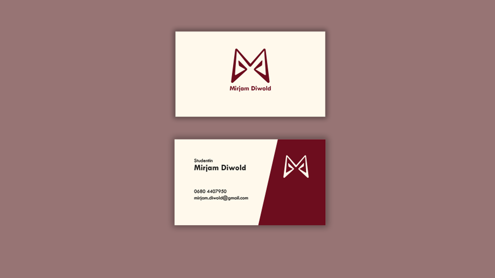
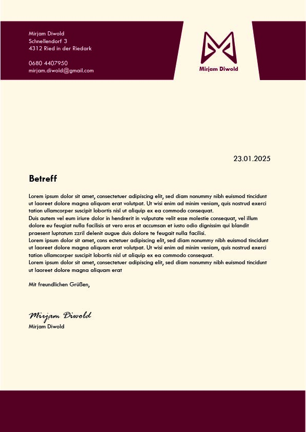
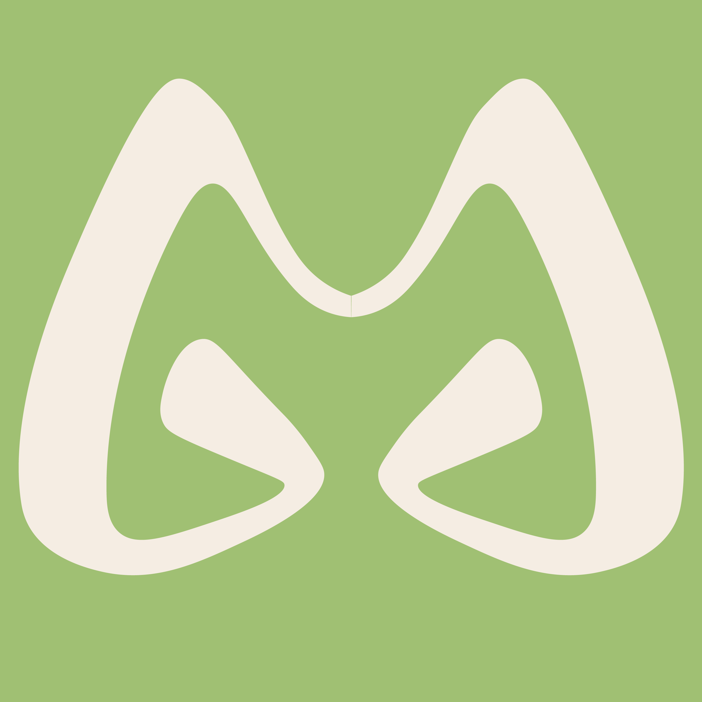
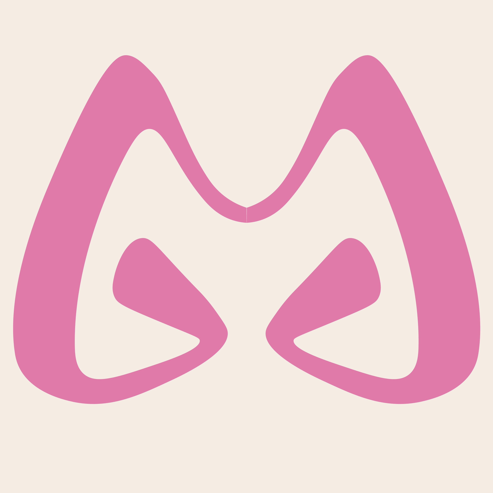
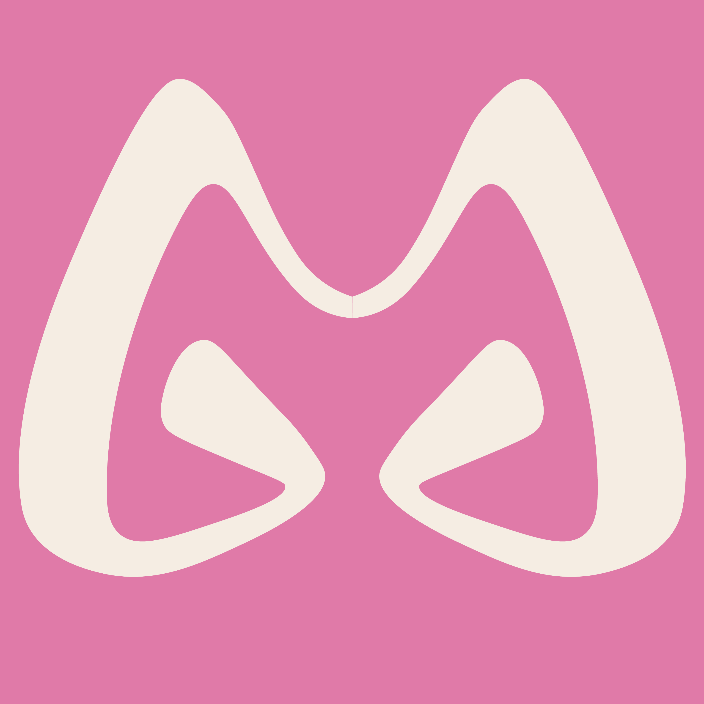

Für dieses Corporate‑Design habe ich ganz klassisch mit Papier und Stift gestartet. Ich wollte meine Initialen M und D in einer klaren, modernen Form kombinieren. Das M ließ sich schnell gut integrieren, das D habe ich eher subtil über die abgerundeten Enden angedeutet. Aus den besten Skizzen entstand später die digitale Version in Illustrator. Das ursprüngliche Design bestand aus Varianten in Schwarz/Weiß, Weiß/Schwarz sowie einer Farbwelt aus Burgunderrot und Beige. Dazu habe ich passende Visitenkarten und Briefpapier gestaltet – schlicht, sauber und mit viel Raum für Typografie. Mit etwas Abstand habe ich das Logo später weiterentwickelt. Einige Details fühlten sich nicht mehr ganz nach mir an, also habe ich die Form weicher gemacht und die Farben aufgefrischt. Die neuen Varianten in Orange‑Beige, Grün‑Beige und Pink‑Beige wirken lebendiger und passen besser zu meinem aktuellen Stil.






